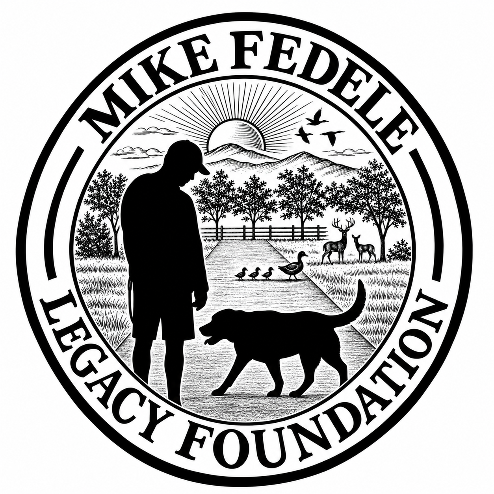

Dogs never live long enough. Neither did Mike.
We can't give them more time, but we can do everything in our power to make the time they have count.
Why we're here
To ensure financial limitations never determine an animal's comfort, care, or dignity.
Supporting animals with dignity, proper care, and genuine love.
Meet Michael
Michael Fedele couldn't possibly be summed up in a few sentences on a website. Hell, he couldn't be summed up at all.
But if you'd like to get a feel for who he was, we've got a few stories to tell. And we're certainly not the only ones.
A whole lot of laughs. An even bigger heart. One unforgettable guy.
Michael Fedele was truly one of a kind. Larger than life, quick with a joke (and usually a few choice words), he had a way of making just about everything more entertaining.
He loved his family and friends fiercely, never met an animal he couldn't charm, and left everyone with at least one story they'll never forget.
Trying to capture who Michael was in a few paragraphs would be impossible. Fortunately, his sister Stephanie gave it a pretty good shot.
Below is the eulogy she wrote and delivered at his funeral. It's funny, heartfelt, occasionally inappropriate, and completely Michael.
Prepare for some profanity, but not nearly as much as you'd have to to be around him.
Read Michael’s Complete Eulogy
Genuine love
Patience wasn't typically Michael's strong suit.
But when Snickers got older and their walks down his parents' driveway became slower, Michael slowed down with her. He never rushed her. He let her take her time, however long that took.
Because genuine love isn't always about grand gestures. Sometimes it's something as simple as slowing down for someone who can't keep up anymore.
It's the kind of love that shows up, listens, waits, and stays.
Make a Difference
Donate
Your donation helps animal rescues and shelters provide essential medical care, comfort, and a better quality of life for animals who need it.
Zeffy: 100% of your donation reaches the foundation; any contribution to Zeffy is optional and can be set to $0.
Venmo: Charity processing fee estimated at 1.9% + $0.10, subject to verification.
PayPal: Applicable charitable processing fees will be displayed once verified.
Official foundation donation links will be enabled after accounts are established. No payments are collected on this page yet.
Give Your Time
Volunteer opportunities with rescue and shelter partners and future foundation events will be shared as they become available.
The Ones We Never Deserved, But Got Lucky Enough to Love
Some are still by our sides. Others we'd give anything to have one more day with. Every one of them deserves to be celebrated.
After making a donation, you can choose to honor or remember a beloved pet, share a photo and message, and opt in to public display. All tributes require approval before publication.
Tribute submissions will open when donation verification and private review tools are connected.
Memories of Mike
Have a memory or photo of Mike you'd love to share? We'd love to hear it.
Serious? Funny? Heartfelt? Embarrassing or indecent? Sure, we'll take them all.
And don't feel like you have to fit everything into one submission. Come back whenever another story pops into your head, you stumble across an old photo, or something reminds you of Mike. There's always room for another memory.
Memory submissions and photo uploads will open when the private approval system is connected. Nothing will be published without Stephanie's approval.
Request Assistance
We're Just Getting Started!
We just launched, and while we'd love to start helping animals right away, we need to raise the funds to make that happen.
Want to help us get there? We'd love that.
Help Us Get There — DonateContact Us
Have a question, an idea, or just want to get in touch? We'd love to hear from you.
stephanie@mikefedelelegacy.org
Contact form will be activated after email delivery is configured.